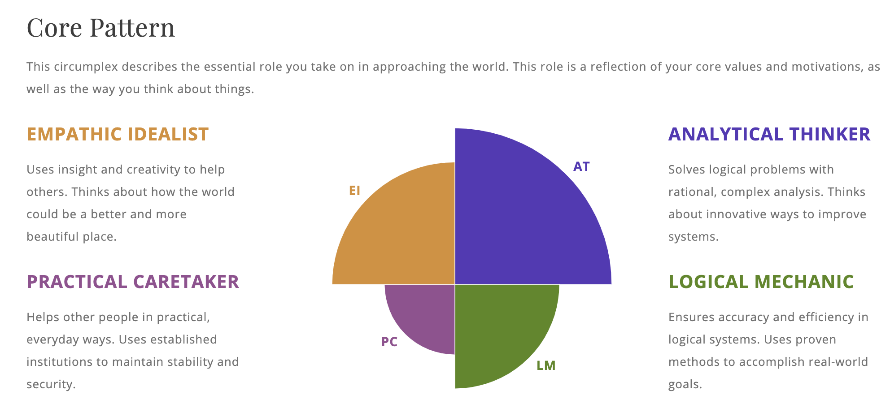

The result of this test was ‘Architect – Turbulent’
The Architect category indicates a personality of questioning the status quo and believing that any challenge can be faced through the use of knowledge. Furthermore, an architect personality is independent and can see lone-wolf. The specification of turbulent adds an element of concern for real and perceived short-comings, allowing for self-critique and analysis.
Additionally, from the individual elements, it is evident that my primary personality is introverted and turbulent with opposing logic and intuition opposite.
Given the information in this test, it shows that working in a team of like-minded and focused individuals is the primary option for success. In the event of working within a team built on socialisation and small-talk, the outcome would have opportunity. However, when in a focused team built around the task and competency, the outcomes would be positive.
The learning style identified by the test taken is Logical rather than visual, aural or kinaesthetic. This indicates that I would learn best by drawing links between concepts to gain a wholistic understanding of the concept, the why’s.
This style assists me in gaining a wider and more relevant understanding of the concepts or information needed. However, in the event of no connections or information provided, or if time does not allow, it can dramatically compromise memory and understanding of the content.
In a team environment, this allows a logical learner to see a big picture of the task and the interconnections it has. However, it can also affect the knowledge gained when this information is unknown.
This test measures scores on 5 personality traits of Openness, Conscientiousness, Extraversion, Agreeableness, and Neuroticism. As indicated to the left, scores were high in the logic and analysis criteria of O and C and lower in the social and interpersonal connection criteria.
Also provided by this test, was a graph identifying personality types based upon these results. This graphic identifies a strength in analytical thinking – complex analysis and innovative thinking, again with categories primarily dealing with social interactions falling behind those of analytics and logic.
From the results given by these tests, it is evident that my personality is primarily that of logic, analytics and the use of knowledge to solve problems. It also indicates, to varying levels and conclusions, a propensity to have opportunities in interpersonal interactions and social understanding.
In a team setting, these results lend themselves towards a competent team of similar people, rather than one reliant on socialisation to maintain a workflow. In a team of similar individuals, the collaboration on work would be kept to necessity and each would work on their task independently towards a common goal.
With this notion in mind, it would be essential to keep these factors in consideration when forming a team. Notably, ensuring that the team does not contain individuals of the opposite ends of a communication and introversion spectrum would be advantageous. Although these individuals bring a different perspective to the team, the architect personality would struggle to work cohesively with these individuals, negating and potential or perceived benefit.
Although the results of various personality tests often create contradictory or seemingly inaccurate results, I believe that the results given match both my personality and work methods. Through other training with my current employer, it is notable that the attributes expressed above match closely with those previously identified. It would be remise to not raise objection to the decisiveness of the Myer-Briggs analysis in describing the personality traits as significantly impersonal and ‘lone-wolf’. It is my contention that this overly states these elements and provides an image of an inability to work within a team period, rather than correctly identifying the challenges and yet opportunities that team work provides for this specific characteristic.